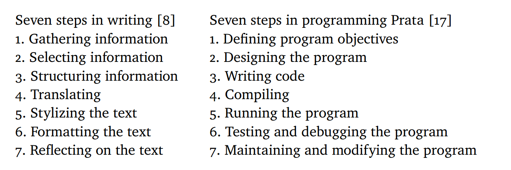

Programming is Writing is Programming
(Felienne Hermans)

Tomas Petricek, The Alan Turing Institute
tomasp.net | tomas@tomasp.net | @tomaspetricek
Formatting in programming and writing

(mario.c, International Obfuscated C Code Contest, 2014)

(Ať jde každý vlastní cestou, Antikódy, Václav Havel, 1964)
Formatting and meaning
Can make consumption easier in writing ✔
Can make consumption easier in programming ✔
Can support the meaning in writing ✔
Can support the meaning in programming ?
Can form the key component of meaning in writing ✔
Can form the key component of meaning in programming ✘
What if formatting was
a proper part of meaning?
Process of writing
Process of writing and programming
(Programming is Writing is Programming, Hermans & Aldewereld)
Pirsig on rules for "good writing"
[T]he rule was pasted on to the writing after the writing was all done.
It was post hoc, after the fact, instead of prior to the fact.And he became convinced that all the writers the students were supposed to mimic wrote without rules, putting down whatever sounded right, then going back to see if it still sounded right and changing it if it didn't.
(Zen and the art of motorcycle maintenance, Pirsig 1974)
Do we mistake descriptive for prescriptive?
Is programming more constrained
because computer has to run your program?
How to learn from Programming is Writing is Programming?
Write programs for reading, not for execution!
Programs just for reading

Summary
Liberate programming from the tyranny of execution?
- Explore how coding style can carry meaning
- What rules might be worth breaking?
- Not joking! Pseudocode is the same since 1960s
Tomas Petricek | tomas@tomasp.net | @tomaspetricek
The essence of program or text
Eventually, Estragon dozes off and Vladimir rouses him but then stops him before he can share his dreams—another recurring activity between the two men. Estragon wants to hear an old joke, which Vladimir cannot finish without going off to urinate. Upon Vladimir's return, Estragon suggests that they hang themselves, but they abandon the idea when the logistics seem ineffective.
(Waiting for Godot, Samuel Beckett 1953)
The essence of program or text
For text, we know plot is not the essence of text.
For programs, we believe there is a succinct
essence or high-level program description.